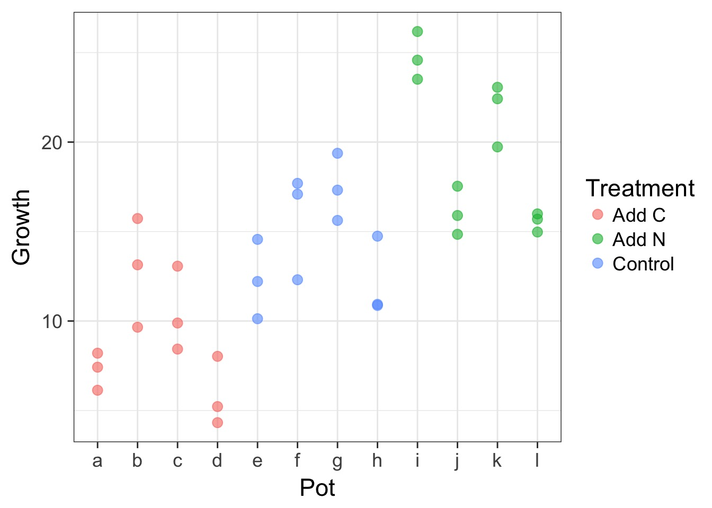
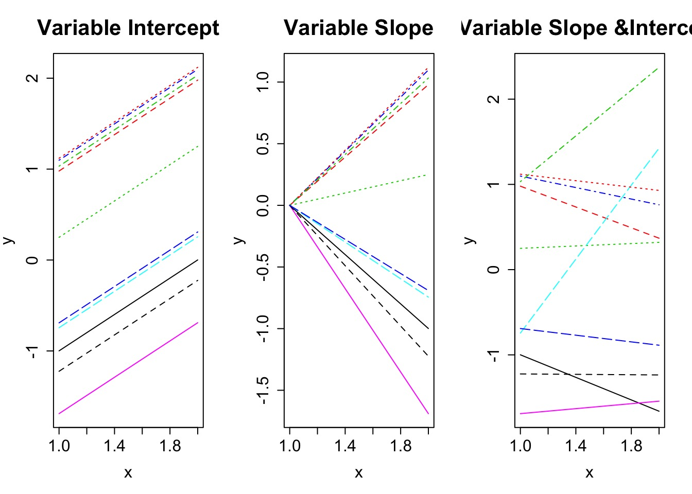
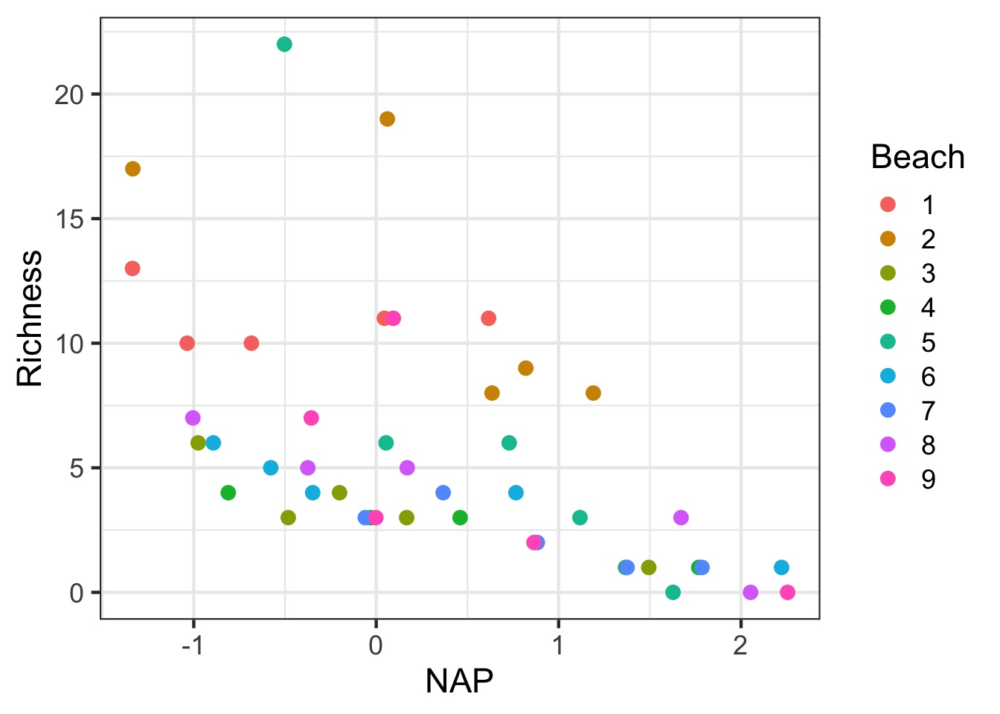
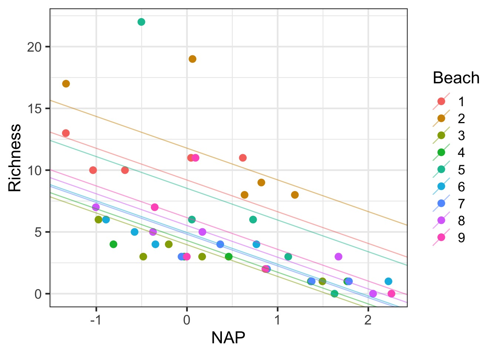
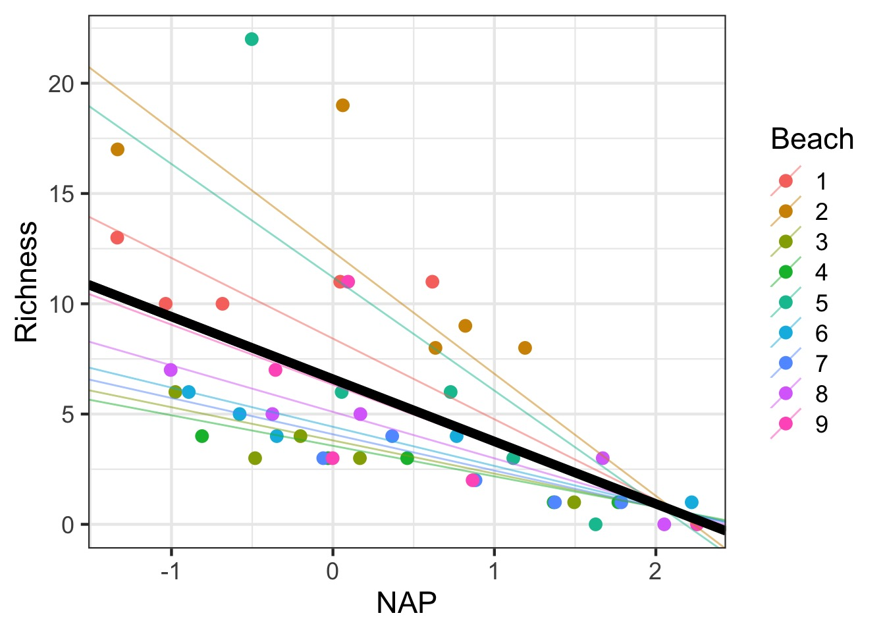
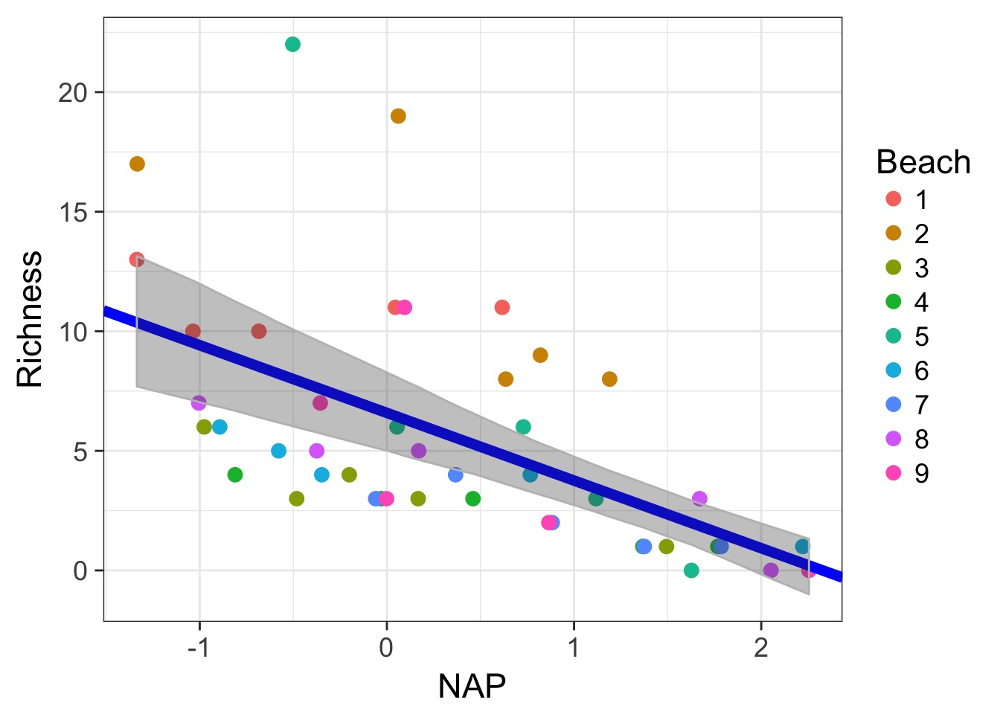
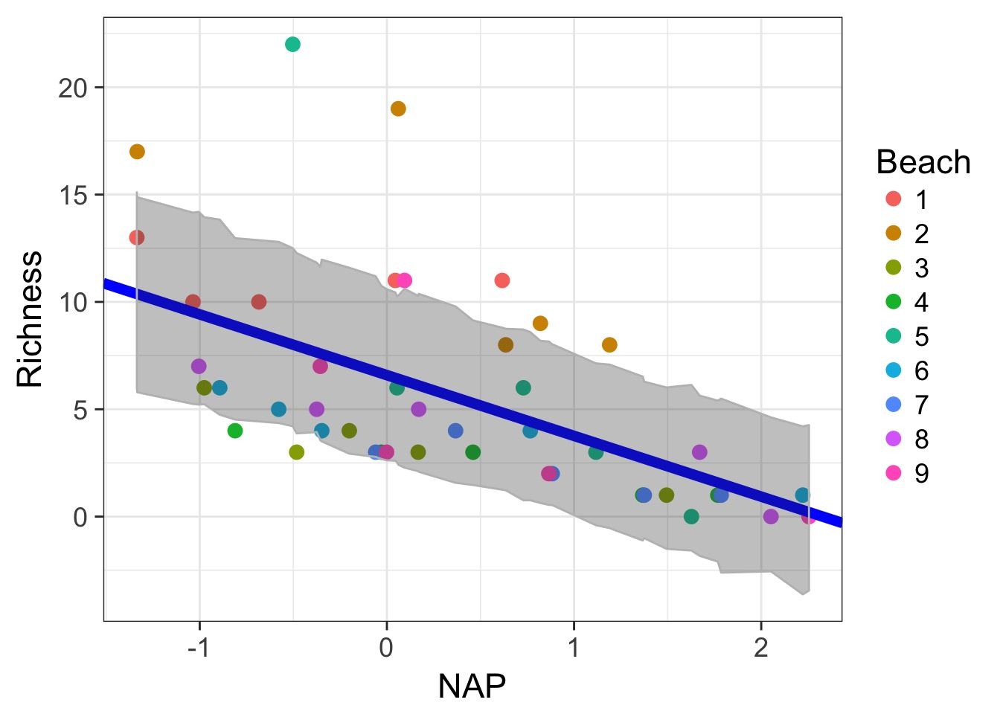
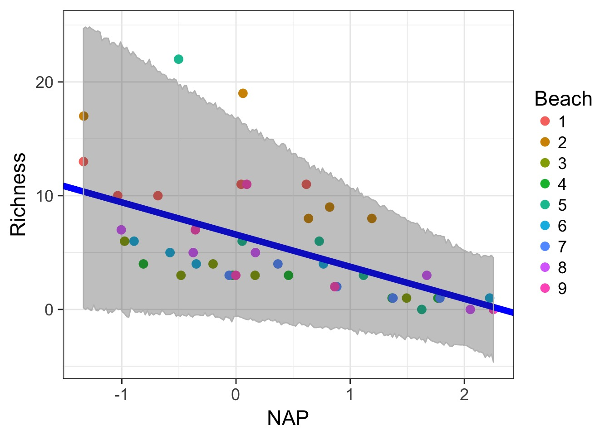
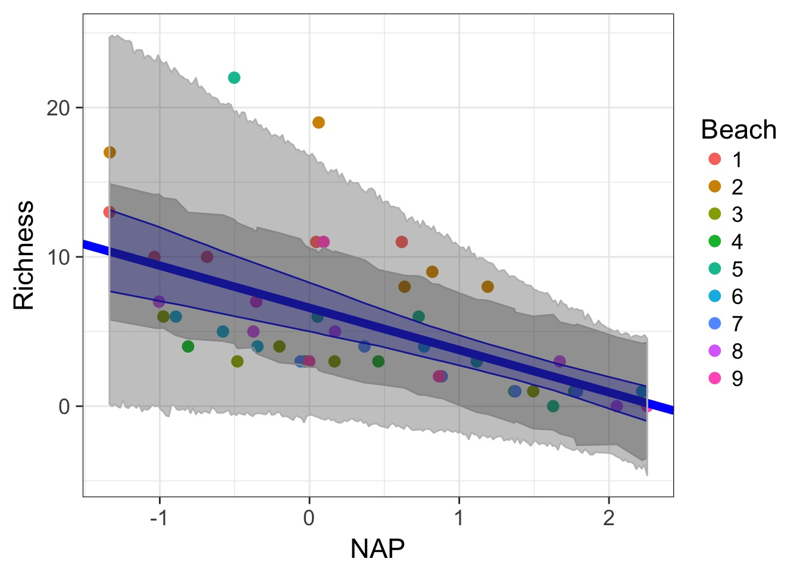

Mixed Models

Today
- Brief review
- Evaluating models
- Visualizing different types of mixed models
- Uncertainty
Random Effects Model
\[Y_{ij} = \alpha_{j} + \epsilon_i\]
\[\alpha_{j} \sim \mathcal{N}(\mu_{\alpha}, \sigma^2_{\alpha})\]
\[\epsilon \sim \mathcal{N}(0, \sigma^2)\]
Now add predictors: Mixed Models with Variable Intercepts
\[Y_{ij} = \alpha_{j} + \beta X_i + \epsilon_i\]
\[\alpha_{j} \sim \mathcal{N}(\mu_{\alpha}, \sigma^2_{\alpha})\]
\[\epsilon \sim \mathcal{N}(0, \sigma^2)\]
Now add predictors: Mixed Models with Variable Slopes
\[Y_{ij} = \alpha + \beta_j X_{ij} + \epsilon_i\]
\[\beta_{j} \sim \mathcal{N}(\mu_{\beta}, \sigma^2_{\beta})\]
\[\epsilon \sim \mathcal{N}(0, \sigma^2)\]
Now add predictors: Mixed Models with Variable Slopes and Intercepts
\[Y_{ij} = \alpha_{ij} + \beta_{j}X_{ij} + \epsilon_{ij}\]
\[\begin{pmatrix}
\alpha_{ij} \\ \beta_{ij} \end{pmatrix} \sim \mathcal{MVN}\left ( \begin{pmatrix} \mu_{\alpha} \\ \mu_{\beta} \end{pmatrix} , \begin{pmatrix} \sigma_{\alpha}^{2}& \rho\sigma_{\alpha}\sigma_{\beta}\\ \rho\sigma_{\alpha}\sigma_{\beta} & \sigma_{\beta}^{2} \end{pmatrix} \right )\]
\[\epsilon \sim \mathcal{N}(0, \sigma^2)\]
Today
- Brief review
- Evaluating models
- Visualizing different types of mixed models
- Uncertainty
A Greenhouse Experiment testing C:N Ratios
The design is as follows:
3 Treatments (Control, C, N)
4 Pots of Plants per Treatment
4 Growth Chambers with n=1
3 Leaves Measured Per Pot
Nesting and Hierarchies
Here we have two levels of nesting:
1. Leaves in a pot
2. Pot in a chamber
Now add predictors: Mixed Models with Variable Intercepts
\[Y_{ijk} = \alpha_{jk} + \beta X_i + \epsilon_i\]
\[\alpha_{jk} \sim \mathcal{N}(\mu_{\alpha_k}, \sigma^2_{\alpha_j})\]
\[\alpha_{k} \sim \mathcal{N}(\mu_{\alpha}, \sigma^2_{\alpha_k})\]
\[\epsilon \sim \mathcal{N}(0, \sigma^2)\]
Visualizing Our Plant Experiment

But how variable are things between growth chambers?

Questions
- Does treatment matter?
- Do we need to account for growth chamber?
- Note, we at least need to account for non-independence of pot
What random effects do I need to use?
- Is there a clear and obvious source of non-independence due to a group?
- Yes, include it!
- Yes, include it!
- Is there a possible, but, eh, possibly non-problematic source of non-independence?
- Put it to the test!
- Put it to the test!
Evaluating Random Effects
- Do this first, as random effect structure alters fixed effects outcomes
- Use \(\chi^2\) tests for random effects - for a REML fit without any random effects, use gls OR
- If variance components small, need simulation approaches - see RLRsim
Our Model
A Quick Note in Nesting Code
- We did not specify nesting
lme4automagically notes nested structure, calculates random effects appropriately
- This is not so for
nlme- special syntax1 | Toplevel / Lowerlevel
- or
1 | Lowerlevel %in% Toplevel
- Will work in
lme4, but why?
Nesting: These produce equvalent results to plants_mer
`
## LME4
plants_mer2 <- lmer(Growth ~ Treatment +
(1|Chamber/Pot) ,
data= plants)
## NLME
plants_lme<- lme(Growth ~ Treatment,
random = ~ 1|Chamber/Pot,
data=plants)A Test of Random Effects with RLRT
plants_mer_nochamber <- update(plants_mer, . ~ . - (1|Chamber))
anova(plants_mer, plants_mer_nochamber)Data: plants
Models:
plants_mer_nochamber: Growth ~ Treatment + (1 | Pot)
plants_mer: Growth ~ Treatment + (1 | Pot) + (1 | Chamber)
Df AIC BIC logLik deviance Chisq Chi Df
plants_mer_nochamber 5 185.61 193.53 -87.805 175.61
plants_mer 6 187.44 196.94 -87.719 175.44 0.1711 1
Pr(>Chisq)
plants_mer_nochamber
plants_mer 0.6791A Test of Random Effects via Simulation
Need to include a model with ONLY the random effect being tested
#No Pot, Only Chamber
plants_mer_only_chamber <- update(plants_mer, . ~ . - (1|Pot))
#The Simulation Test
exactRLRT(m0 = plants_mer_nochamber,
m = plants_mer_only_chamber,
mA = plants_mer)A Test of Random Effects via Simulation
Need to include a model with ONLY the random effect being tested
simulated finite sample distribution of RLRT.
(p-value based on 10000 simulated values)
data:
RLRT = 0.12832, p-value = 0.2779Testing fixed effects
- RLRT tests for fixed effects are conservative
- Provide more weight of Deviance to Random Effects
- Need to refit models using ML
- set
REML=FALSE
- set
DF for Fixed Effect Testing
- Satterthwaite approximation - Based on sample sizes and variances within groups
- Kenward-Roger’s approximation
- Based on estimate of variance-covariance matrix of fixed effects and a scaling factor
With no Correction
plants_mer_ml <- lmer(Growth ~ Treatment +
(1|Pot) + (1|Chamber),
data= plants, REML=FALSE)
anova(plants_mer, type=2)Analysis of Variance Table
Df Sum Sq Mean Sq F value
Treatment 2 82.792 41.396 10.17Satterhwaite Approximation with lmerTest
library(lmerTest)
#have to refit
plants_mer_testme <- lmer(Growth ~ Treatment +
(1|Pot) + (1|Chamber),
data= plants, REML=FALSE)
anova(plants_mer_testme, type=2)Analysis of Variance Table of type II with Satterthwaite
approximation for degrees of freedom
Sum Sq Mean Sq NumDF DenDF F.value Pr(>F)
Treatment 110.39 55.195 2 8 13.56 0.002692 **
---
Signif. codes: 0 '***' 0.001 '**' 0.01 '*' 0.05 '.' 0.1 ' ' 1KR Approximation with lmerTest
anova(plants_mer_testme, ddf="Kenward-Roger", type=2)Analysis of Variance Table of type II with Kenward-Roger
approximation for degrees of freedom
Sum Sq Mean Sq NumDF DenDF F.value Pr(>F)
Treatment 82.792 41.396 2 6 10.17 0.01182 *
---
Signif. codes: 0 '***' 0.001 '**' 0.01 '*' 0.05 '.' 0.1 ' ' 1Note that DenDF are 6. Were 8 with Satterthwaite.
KR Approximation with lmerTest
summary(plants_mer_testme, ddf="Kenward-Roger")$coef Estimate Std. Error t value
(Intercept) 9.102532 1.512905 6.016593
TreatmentAdd N 10.432122 2.003305 5.207457
TreatmentControl 5.301297 2.003305 2.646276AIC
- Yes, you can use AIC…carefully
- Comparison of models with varying fixed effects (marginal AIC) is fine
- Varying random effects structure…not as much
- Conditional AIC (cAIC) sensu Vaida and Blanchard 2005 - Uses conditional likelihood and effective DF
- Based on fit v. observed responses
- This is an evolving area of research
- Still gotta do a lot by hand (e.g. cAICc)
cAIC
library(cAIC4)
AIC(plants_mer)[1] 179.072cAIC(plants_mer)$caic[1] 166.6196cAIC(plants_mer, method="conditionalBootstrap")$caic[1] 162.2052cAIC in Action
cAIC(plants_mer)$caic[1] 166.6196cAIC(plants_mer)$df[1] 12.44656cAIC(plants_mer_nochamber)$caic[1] 166.2259cAIC(plants_mer_nochamber)$df[1] 12.26366#delta
cAIC(plants_mer_nochamber)$caic - cAIC(plants_mer)$caic[1] -0.3936457R2
- What does R2 mean in the context of mixed models?
- We are often interested in the explanatory power of fixed effects
- But random components explain variability in the data
- We need to decompose these into marginal and conditional R2 values
- e.g., from fixed and random sources
- e.g., from fixed and random sources
- See Schielzeth and Nakagawa 2013 MEE and
piecewiseSEM’s implementation
Getting Fit
library(piecewiseSEM)
rsquared(plants_mer) Class Family Link n Marginal Conditional
1 lmerMod gaussian identity 36 0.5556466 0.8787815rsquared(plants_mer_nochamber) Class Family Link n Marginal Conditional
1 lmerMod gaussian identity 36 0.5556466 0.8787815Posthocs from lmerTest
lsmeans(plants_mer_nochamber)Least Squares Means table:
Treatment Estimate Standard Error DF t-value Lower CI
Treatment Add C 1 9.10 1.75 9 5.21 5.15
Treatment Add N 2 19.53 1.75 9 11.18 15.58
Treatment Control 3 14.40 1.75 9 8.25 10.45
Upper CI p-value
Treatment Add C 13.1 6e-04 ***
Treatment Add N 23.5 <2e-16 ***
Treatment Control 18.4 <2e-16 ***
---
Signif. codes: 0 '***' 0.001 '**' 0.01 '*' 0.05 '.' 0.1 ' ' 1General Protocol for Model Fitting
- Start with model with all fixed and random effects that may be important. Evaluate with diagnostics.
- Evaluate random effects with full model of all fixed effects using REML(\(\chi^2\), RLRT, cAIC, etc.)
- Evaluate fixed effects with reduced random effects (F Tests using ML fit)
- Model diagnostics again…
- Draw inference from model using Wald tests, lsmeans, visualization, etc.
Today
- Brief review
- Evaluating models
- Visualizing different types of mixed models
- Uncertainty
Types of Mixed Models

Let’s take this to the beach with Tide Height

We’ve seen a Variable Intercept Model Already
How to Plot?

Adding Variable Intercepts
rikz_varint_lines <- coef(rikz_varint)$Beach
rikz_varint_lines$Beach <- levels(rikz$Beach)
rikz_plot <- rikz_plot_base +
geom_abline(data=rikz_varint_lines,
aes(slope = NAP, intercept=`(Intercept)`,
color=Beach),
alpha=0.5)
rikz_plotAdding Variable Intercepts

Adding the fixed effect
rikz_plot +
geom_abline(slope=fixef(rikz_varint)[2],
intercept=fixef(rikz_varint)[1],
size=3)Adding the fixed effect

Variable Slope Model
\[Y_{ij} = \alpha + \beta_j X_{ij} + \epsilon_i\]
\[\beta_{j} \sim \mathcal{N}(\mu_{\beta}, \sigma^2_{\beta})\]
\[\epsilon \sim \mathcal{N}(0, \sigma^2)\]
Variable Slope Model
rikz_varslope <- lmer(Richness ~ NAP +
(NAP - 1|Beach),
data=rikz)Note the - 1 to denote only the slope is varying
Variable Slope-Intercept Model
\[Y_{ij} = \alpha_{ij} + \beta_{j}X_{ij} + \epsilon_{ij}\]
\[\begin{pmatrix}
\alpha_{ij} \\ \beta_{ij} \end{pmatrix} \sim \mathcal{MVN}\left ( \begin{pmatrix} \mu_{\alpha} \\ \mu_{\beta} \end{pmatrix} , \begin{pmatrix} \sigma_{\alpha}^{2}& \rho\sigma_{\alpha}\sigma_{\beta}\\ \rho\sigma_{\alpha}\sigma_{\beta} & \sigma_{\beta}^{2} \end{pmatrix} \right )\]
\[\epsilon \sim \mathcal{N}(0, \sigma^2)\]
Variable Slope-Intercept Model
rikz_varslopeint <- lmer(Richness ~ NAP +
(NAP + 1|Beach),
data=rikz)Variable Slope Intercept Model

Variable Slope-Intercept Model with No Covariance
rikz_varslopeint_nocov <- lmer(Richness ~ NAP +
(NAP-1|Beach) +
(1|Beach),
data=rikz)Testing the vcov assumption
anova(rikz_varslopeint, rikz_varslopeint_nocov, refit=FALSE)Data: rikz
Models:
..1: Richness ~ NAP + (NAP - 1 | Beach) + (1 | Beach)
object: Richness ~ NAP + (NAP + 1 | Beach)
Df AIC BIC logLik deviance Chisq Chi Df Pr(>Chisq)
..1 5 248.00 257.03 -119.00 238.00
object 6 244.38 255.22 -116.19 232.38 5.616 1 0.0178 *
---
Signif. codes: 0 '***' 0.001 '**' 0.01 '*' 0.05 '.' 0.1 ' ' 1Look at al of those variances
| term | estimate | std.error | statistic | group |
|---|---|---|---|---|
| (Intercept) | 6.5887028 | 1.2647632 | 5.209436 | fixed |
| NAP | -2.8300264 | 0.7229382 | -3.914617 | fixed |
| sd_(Intercept).Beach | 3.5490711 | NA | NA | Beach |
| sd_NAP.Beach | 1.7149557 | NA | NA | Beach |
| cor_(Intercept).NAP.Beach | -0.9901979 | NA | NA | Beach |
| sd_Observation.Residual | 2.7028237 | NA | NA | Residual |
Testing Variable Intercept assumption
anova(rikz_varslopeint, rikz_varslope, refit=FALSE)Data: rikz
Models:
..1: Richness ~ NAP + (NAP - 1 | Beach)
object: Richness ~ NAP + (NAP + 1 | Beach)
Df AIC BIC logLik deviance Chisq Chi Df Pr(>Chisq)
..1 4 260.20 267.43 -126.10 252.20
object 6 244.38 255.22 -116.19 232.38 19.817 2 4.975e-05 ***
---
Signif. codes: 0 '***' 0.001 '**' 0.01 '*' 0.05 '.' 0.1 ' ' 1Testing Variable Slope assumption
anova(rikz_varslopeint, rikz_varint, refit=FALSE)Data: rikz
Models:
..1: Richness ~ NAP + (1 | Beach)
object: Richness ~ NAP + (NAP + 1 | Beach)
Df AIC BIC logLik deviance Chisq Chi Df Pr(>Chisq)
..1 4 247.48 254.71 -119.74 239.48
object 6 244.38 255.22 -116.19 232.38 7.0964 2 0.02878 *
---
Signif. codes: 0 '***' 0.001 '**' 0.01 '*' 0.05 '.' 0.1 ' ' 1Today
- Brief review
- Evaluating models
- Visualizing different types of mixed models
- Uncertainty
Plotting Uncertainty via Simulation
library(merTools)
#The fit values
predDF <- predictInterval(rikz_varslopeint,
newdata=rikz,
which="fixed",
include.resid.var = FALSE)
predDF$NAP <- rikz$NAPPlotting Uncertainty via Simulation
#The Plot
rikz_plot_base +
geom_abline(slope=fixef(rikz_varslopeint)[2],
intercept=fixef(rikz_varslopeint)[1],
size=2.5, color="blue") +
geom_ribbon(data=predDF, mapping=aes(y = fit, ymin=lwr, ymax=upr),
alpha=0.3, color="grey")Plotting Uncertainty via Simulation

Showing Fixed Prediction Uncertainty: include.resid.var=TRUE

Getting the Full Range of Uncertainty
#new data for all beaches
uncDF <- data.frame(expand.grid(Beach = levels(rikz$Beach),
NAP = seq(min(rikz$NAP), max(rikz$NAP),
length.out=200)))
#fit values
pred_unc_df <- predictInterval(rikz_varslopeint,
newdata=uncDF,
which="full",
include.resid.var = TRUE)
#get the wide range
fit_unc_df <- cbind(uncDF, pred_unc_df) %>%
group_by(NAP) %>%
summarize(fit=mean(fit), lwr = min(lwr), upr = max(upr)) %>%
ungroup()Getting the Full Range of Uncertainty

Here be Uncertainty

Need all three for extrapolation
Example
- Load up the RIKZ data
- Look at both exposure and NAP
- Test fixed and random effects
- Visulize results
General Protocol for Model Fitting
- Start with model with all fixed and random effects that may be important. Evaluate with diagnostics.
- Evaluate random effects with full model of all fixed effects using REML(\(\chi^2\), RLRT, cAIC, etc.)
- Evaluate fixed effects with reduced random effects (F Tests using ML fit)
- Model diagnostics again…
- Draw inference from model using Wald tests, lsmeans, visualization, etc.